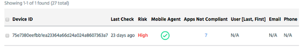

Access additional details for apps and devices from the results table in the main section. This App Report has useful information for an app.
From the Apps tab list:

To download the App Report
The app report consists of several sections with information about the app.
Trust Score
Appthority assigns each app a score ranging from 0-100 that reflects the potential risk. A visual display and specific number show the assessed risk for the app.
Analysis Status
The details of the analysis, including hashes and timestamps.
Analysis Summary
Summary information about the app.
Behaviors List
All Appthority risky behaviors, with True or False indicating whether the behavior is present.
Risky Behaviors
The risky behaviors present in this app, with a description of each behavior and its risk.
Hostname, IP & URL Access
Hostname, IP addresses, and URLs to which the app connects. As there are a growing number of bad URLs an app can connect to, bad URLs are an increasing area of interest for security reasons.
Emails
Emails used by the app during analysis.
Connections
Details of the connections made by the app during analysis.
Map
Shows network connection information made by the app during analysis.